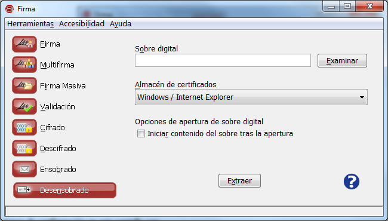

Desde la ventana de "Desensobrado" es posible extraer el fichero contenido en un sobre digital. Para ello sólo será necesario
seleccionar uno de los certificados designados como destinatarios del sobre.

Las opciones de configuración en esta pantalla son:
- Sobre digital:
- Permite seleccionar el sobre digital. Es posible pulsar el botón "Examinar" para buscar un fichero en disco o escribir
directamente su ruta en la caja de texto asociada.
- Tecla de acceso rápido: o
- Almacén / repositorio de certificados:
- Permite seleccionar el almacén en donde se encuentra el certificado del destinatario del sobre. Las opciones
disponibles son:
- Windows / Internet Explorer: Para tomar el certificado del almacén de Windows o un dispositivo externo (por ejemplo,
el DNIe) instalado en el sistema.
- Mozilla Firefox (unificado): Para tomar el certificado del almacén de Firefox o un dispositivo externo (por ejemplo,
el DNIe) configurado en este almacén.
- PKCS#12 / PFX: Para tomar el certificado de un almacén en disco en formato P12 o PFX.
- Tecla de acceso rápido: a
- Opciones de apertura de sobre digital:
- Iniciar contenido del sobre tras la apertura: Si se marcar esta casilla, una vez extraído el contenido del sobre se abrirá
con la aplicación por defecto para la extensión de fichero con el que se almacenes.:
- Tecla de acceso rápido: r
Al pulsar el icono de ayuda se muestra la ventana de ayuda para el menú "Desensobrado".
- Tecla de acceso rápido para el botón de Ayuda: h
Al pulsar el botón "Extraer" se mostrará un diálogo modal con los certificados del repositorio seleccionado. El usuario deberá
seleccionar el certificado de uno de los destinatarios del sobre. Si el certificado no perteneciese a uno de los destinatarios o se
produjese un error durante la extracción del contenido del sobre, se notificará; mientras que, si el proceso finaliza correctamente,
se mostrará un diálogo para el guardado del documento extraído del sobre. Una vez extraído el documento, este se abrirá si se
marcó la casilla "Iniciar contenido del sobre tras la apertura".
- Tecla de acceso rápido para el botón "Extraer": x